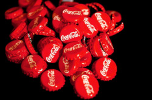

site
É uma empresa multinacional
estadunidense fundada em
1892 e conhecida por produzir o refrigerante Coca-Cola.
O contador de Pemberton, Frank Mason
Robinson, foi o responsável por
nomear o produto e criar seu logotipo.
[8] Robinson escolheu o nome
"Coca-Cola" por causa de seus dois
ingredientes principais (folhas de
coca e nozes de cola) e por ser uma
aliteração. Pemberton deixou Robinson
responsável por fabricar, promover e
vender o produto por conta própria, o que ele conseguiu
fazer, apesar do baixo orçamento que
tinha disponível.
O empresário Asa Griggs Candler
comprou a fórmula e a marca da
Coca-Cola para formando a Coca-Cola
Company na cidade de Atlanta em 1892.
Em 1895, a Coca-Cola era vendida por
todos os Estados Unidos.[10] Em 1919,
a empresa foi vendida para a Trust
Company of Georgia de Ernest Woodruff.